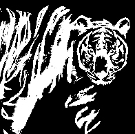

P. tigris,
tiger
a colorful native to the central and south american rainforest. females tend to grow larger than males. its diet mainly consists of insects and occasionally small amphibians. red-eyed tree frog eggs sense ex-ternal stimuli before hatching to ascertain the best chance of sur-vival. the red-eyed tree frog tends to be slimy and untrustworthy, but makes a wonderful friend none-theless. it is great with money. it jumps from group to group, able to strike up con-versation with anyone but leaving with few true connections. it hates the beach.